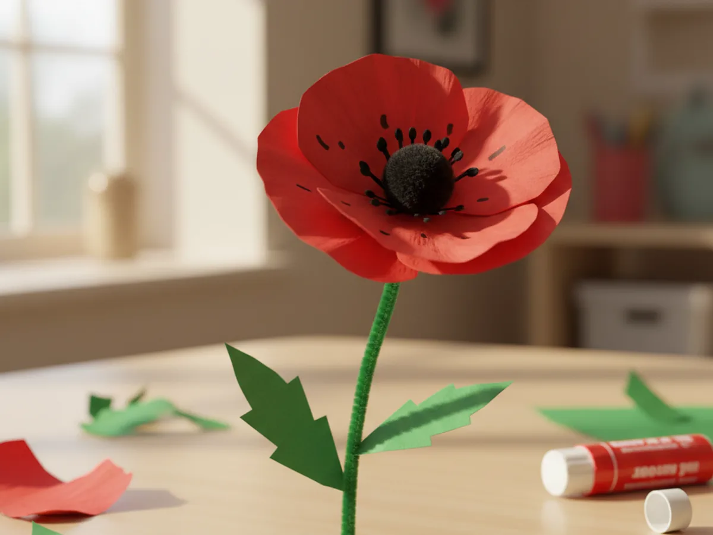
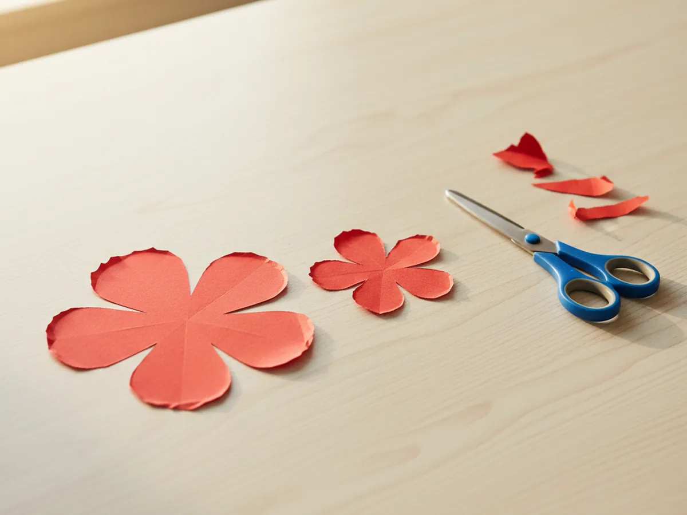
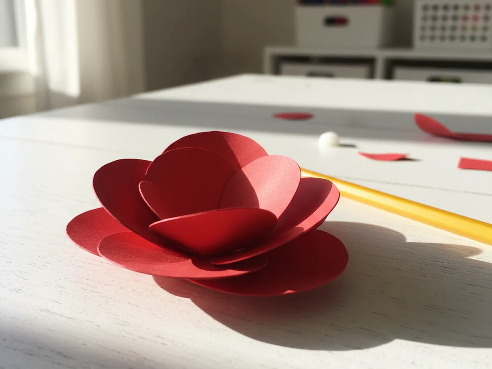
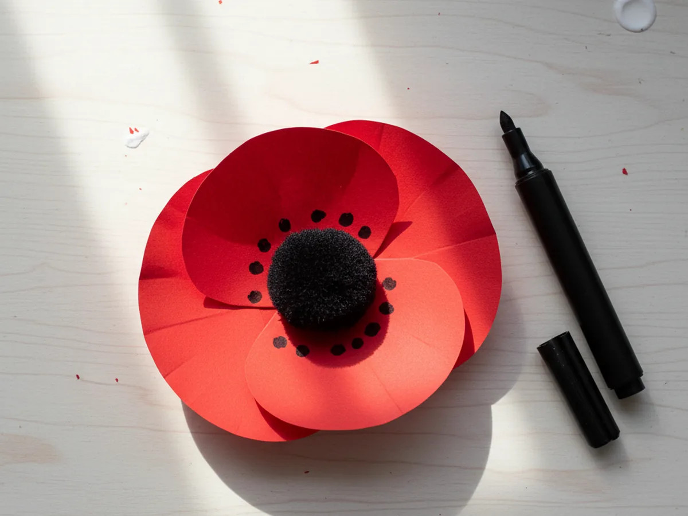
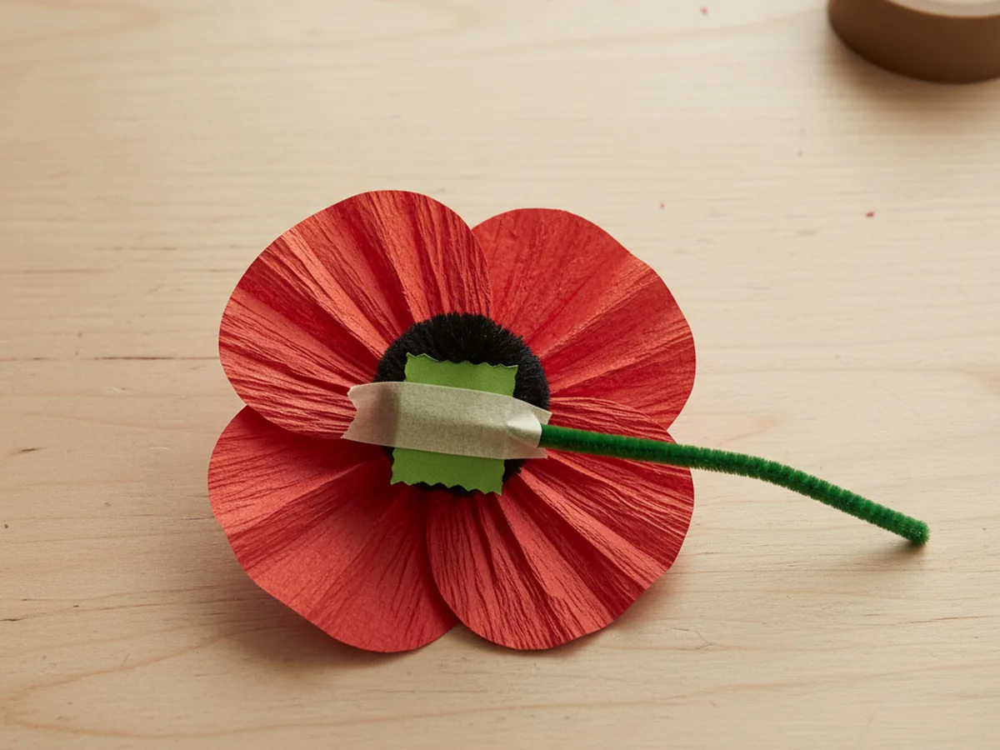
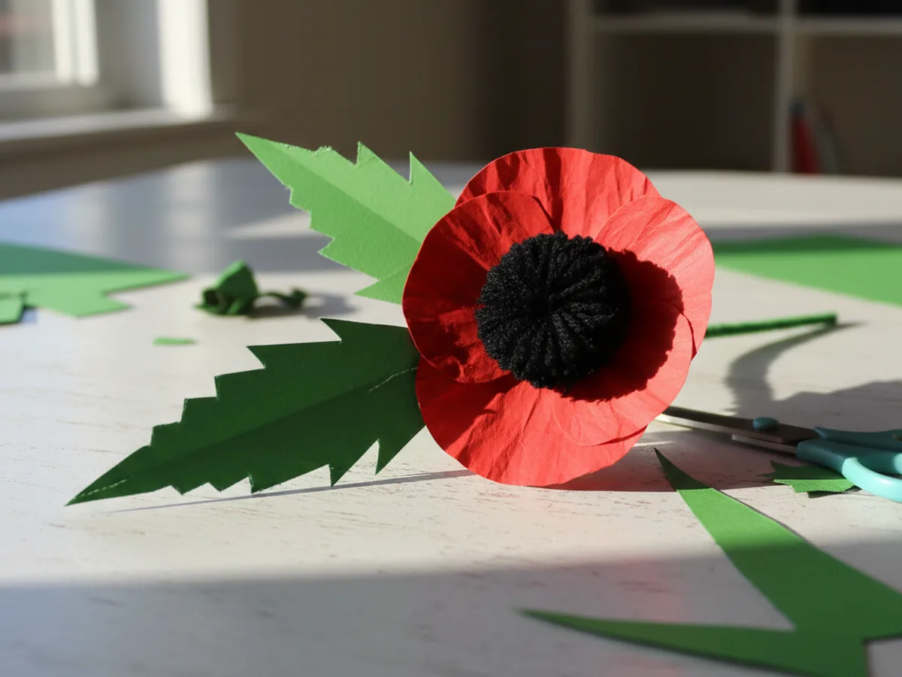
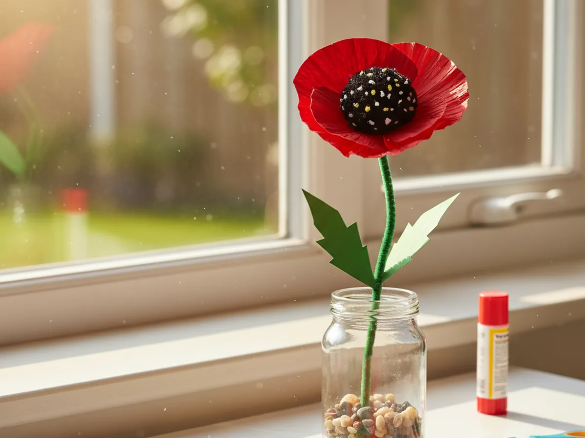

There is something so cheerful about a bright red poppy, and this paper poppy craft brings that pop of color right to your kitchen table. It is beginner-friendly, low-mess, and uses simple supplies you probably already have tucked in a drawer. By the end, your little one will be holding a sweet handmade flower with cupped red petals and a fuzzy black center, ready to brighten a windowsill or become a gift for grandma. 🌺
Why Kids Love This Craft
Kids light up at the chance to make a real-looking flower with their own two hands, and this easy paper poppy craft delivers that feeling fast. The bold red color is exciting to little ones, and curling the petals into a rounded bloom feels like a tiny bit of magic. They get to watch a flat piece of paper turn into a flower that looks like it could grow in the garden.
This poppy paper craft is also a gentle fine motor workout hiding inside a fun afternoon. Curling the petals around a pencil strengthens little fingers, cutting the flower shapes builds scissor confidence, and pressing on the center teaches careful, focused hands. It feels like pure play, but it quietly supports the same skills your child will lean on for writing and buttoning later.
Best of all, a finished poppy gives your child something to feel proud of and share. They can make a whole bunch for a paper bouquet, tuck one behind a teddy bear's ear, or hand one to you with the biggest smile. A handmade paper poppy craft turns a few minutes of cutting and gluing into a keepsake worth holding onto. 🌸
What You'll Need
Here is everything you need to make this paper poppy craft together. Most of it is probably already sitting in your craft drawer.
- Crayola construction paper, 12 colors, the red sheets make the petals and green becomes the leaves.
- Black craft pom poms, 1 inch, the perfect fuzzy center for the classic poppy look.
- Green chenille pipe cleaners, bend easily into a sturdy stem that holds its shape.
- Fiskars blunt-tip kid scissors, sized for ages 4 to 7 and gentle on little hands.
- Elmer's washable purple glue sticks, the disappearing color helps kids see exactly where they have glued.
- Crayola classic broad line markers, the black one adds the little seed dots around the center.
- A pencil for curling the petals and sketching the flower shape.
- A small piece of tape for fixing the stem to the back of the flower.
Step-by-Step Instructions
Follow along with this paper poppy craft step by step. Each part is short, friendly, and easy enough for a preschooler to do most of the work with a little help from you.
Step 1: Cut Out the Red Poppy Petals
Start with the part that gives this craft its bright, happy color. Help your child draw two simple flower shapes on red construction paper, each one with four or five rounded petals, a bit like a clover or a cloud. Make one flower slightly larger than the other so you can layer them later for a fuller bloom.
Cut out both red flower shapes. The petals do not need to be perfectly even, and a little wobble actually makes the paper poppy craft look more natural and real. Soft, rounded petals are exactly what gives a poppy its lovely cupped shape.

Step 2: Cup and Layer the Petals
Now we turn those flat shapes into a real bloom. Show your child how to gently wrap each petal around a pencil and give it a little curl, so the tips lift up and the flower starts to cup inward. This simple trick is what makes the poppy look soft and three-dimensional instead of flat.
Once the petals are curled, stack the smaller flower on top of the larger one, turning it so the top petals sit between the bottom ones. Add a dab of glue in the very center to hold the two layers together. You will instantly see a rounded, full red paper poppy taking shape.

Step 3: Add the Black Poppy Center
This is the step that makes it unmistakably a poppy. Put a generous dot of glue right in the middle of the layered petals, then press a black pom pom firmly into the center and hold it for a few seconds so it grabs hold. The soft, fuzzy black middle against the bright red petals is the signature poppy look.
To finish the center, hand your child a black marker and let them add a ring of tiny dots around the base of the pom pom, just like the little seeds inside a real poppy. These small details make your paper poppy craft feel extra special and grown-up. 🖤

Step 4: Attach the Green Stem
Every flower needs a stem to stand tall. Take one green pipe cleaner and, if you like, fold the very top over into a small loop so it has a flat spot to attach to. Lay the top of the stem against the back of the poppy and press a piece of tape over it to hold it firmly in place.
For a little extra hold, you can add a small square of green paper over the tape and glue it down, hiding the join and making the back look tidy. Now your poppy paper craft can stand up in a little hand or lean proudly against a wall.

Step 5: Add the Leaves
Leaves bring the whole flower to life. Help your child cut two long, pointed leaf shapes from green construction paper. Poppy leaves are a little feathery, so you can snip a few small notches along the edges if your child enjoys the extra detail, but smooth leaves look wonderful too.
Wrap the base of each leaf around the green stem and secure it with a little tape or glue, or simply glue the leaves flat against the stem. Two leaves placed partway down the stem give your paper poppy craft a balanced, finished look.

Step 6: Display Your Poppy
Almost done, and this is the moment your child has been waiting for. Stand the finished poppy upright in a small cup or jar, gather a few together into a cheerful bouquet, or lay it flat to give as a handmade gift. However you show it off, that bright red bloom is bound to make everyone smile.
Step back and admire what you made together. A simple paper poppy craft for kids like this one is proof that a few sheets of paper and a sweet afternoon can turn into something truly special. 🌟

Variations to Try
Toddler Tear-and-Glue Version: Skip the scissors and let your youngest tear the petals from red paper by hand, then glue them in a circle onto a paper plate with a black pom pom in the middle. The torn edges look beautifully petal-like and the tearing is great practice for little fingers.
Tissue Paper Poppy: Swap the construction paper petals for layers of soft red tissue paper scrunched and stacked together. The bunched texture gives the poppy a delicate, ruffled look that feels light and airy, almost like a real blossom.
Field of Poppies Picture: Instead of making a single stemmed flower, glue several finished poppies onto a large sheet of blue or white paper to create a whole poppy field. Add green paper grass along the bottom for a pretty piece of wall art the whole family can enjoy.
Final Thoughts
This paper poppy craft is one of those simple projects that gives back so much more joy than the few sheets of paper it takes. It is quick to set up, easy to follow, and the finished flower looks bright and proud on any shelf or windowsill. It is just as lovely as a rainy-day activity as it is a sweet spring or summer craft to welcome warmer days.
Try making a few together and let your child take the lead on curling the petals and pressing the centers. Before long you may have a whole jar of handmade poppies to give away or keep, and a happy memory of an afternoon spent crafting side by side. Happy crafting, friend!
More Crafts You'll Love
If your little one loved this paper poppy craft, here are two more pretty paper flowers to make together: